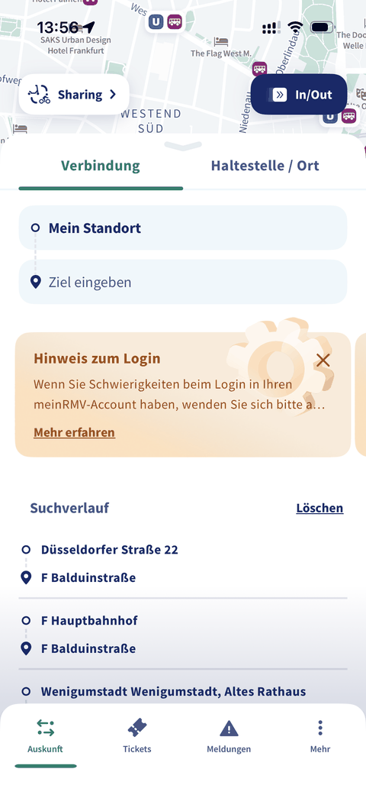
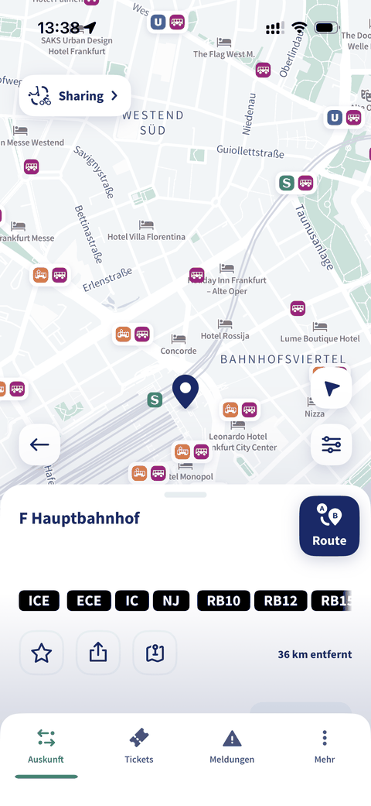
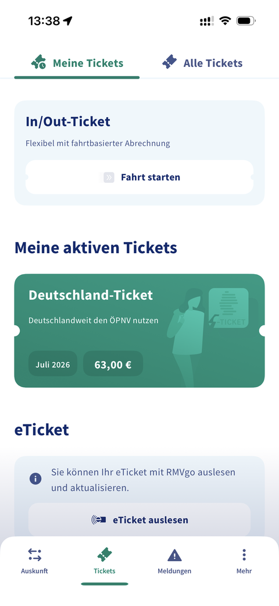
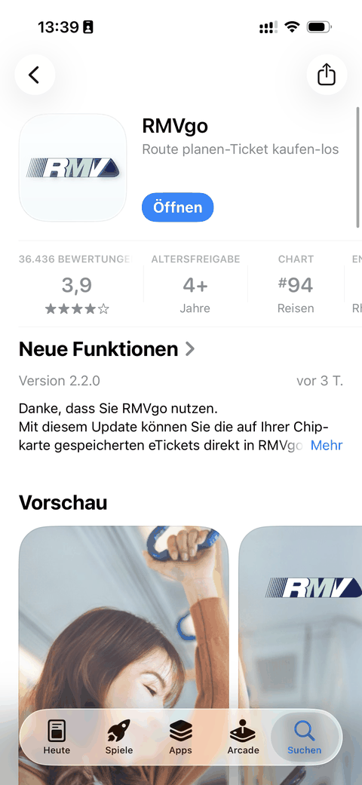

RMVgo App – Qualitätsoffensive
Ich habe ein 3-Mio.-Euro-Projekt zur Qualitätsverbesserung der RMVgo-App geleitet und die App-Bewertung von 1,5 auf fast 4 Sterne gehoben – für über 1 Million Nutzer:innen. Verantwortet habe ich IT-Beratung, Test- und Incident-Management sowie die Stakeholder-Koordination. Zusätzlich konzipierte ich ein Kategoriesystem und das Finetuning eines Small Language Models, um App-Bewertungen automatisiert auszuwerten und über ein Live-Dashboard in die Weiterentwicklung einfließen zu lassen.



